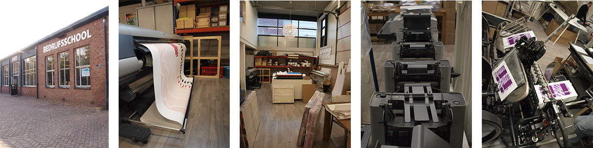

11-03-2015 - Dag 1 introductie op de werkvloer.
Inleiding
De MediaMail Groep bestaat uit zuster- en dochterbedrijven die samen een totaalservice bieden op het gebied van drukwerk.
Mediamail heeft ervaring alles wat met drukwerk te maken heeft, alles wat er aan vooraf gaat en wat er op volgt, kunnen wij voor u verzorgen.
We ontwerpen en produceren volledige marketingacties en wij kunnen zorgen voor elk los onderdeel van het geheel:
conceptontwikkeling, ontwerp, tekstschrijven, lay-out, printen, drukken, inpakken, verspreiding en bezorging, adressenleverantie,
abonnementen- administratie, responseverwerking, databasebeheer tot en met voorraadbeheer voor uw drukwerk.
Ook op het gebied van websites en webwinkels kan Mediamail u van dienst zijn.
10-03-2015
Afspraak geregeld voor een gesprek met de eigenaar Henny van Benthem en de programmeur Johan van Reijn.
Met een kleine introductie en uitleg over het bedrijf is het allemaal goedgekomen, en kon ik beginnen als stagiair bij het bedrijf.
11-03-2015
Begonnen met stage lopen bij Mediamail en kreeg ik te horen waar ik kan zitten een kamer vol bureaus voor de vormgevers en programmeur
en waar ik verder mijn verblijf kon blijven als ik aan het werk ben, er is alleen geen extra pc aanwezig voor mijn werk maar mijn eigen laptop is voldoende voor de werkzaamheden.
Organisatie.
De organisatie binnen het bedrijf word behouden tussen verschillende communicatie media. De telefoon staat op nummer een samen met de chat systeem.
Het bedrijf bestaat uit twee panden, een aanwezig in Nijmegen en de ander in Wijchen en om contact te behouden gebruiken ze deze chat systeem om snel en efficiënt te werken.
Daarnaast word per week zeker minstens een vergadering gehouden waar de huidige stand van zaken worden besproken en de manier van aanpak gepland.
Er word ook gebruik gemaakt van een office mail systeem, zodra een klant een van de aanwezige collega's spreekt en een opdracht meegeeft. Deze word dan doorgestuurd via de mail.
De mail word gemaakt met de zodanige opdracht incl. van wie, wat er moet gebeuren en wanneer dit klaar moet zijn.
Werkzaamheden
De werkzaamheden binnen Media mail voorziet van een grote mix. Er is van alles te verkrijgbaar in onze grafische sector, voor van alles te maken met fysiek drukwerk tot digitaal ontwerp
en er staan genoeg machines en apparaten om te voorzien voor wat voor een product je ook maar naar vraagt. stans apparatuur voor het voorzien van gestanste producten.
Er zijn verschillende print apparatuur voor het voorzien voor de benodigde drukwerk en de benodigde apparatuur die erbij horen zoals de snijmachine, plotter en
rill apparatuur. Op het gebied van het digitale werk zijn er vormgevers aanwezig en een programmeur ze maken gebruik van de verschillende adobe programma's waaronder Illustrator,
Photoshop en Indesign. In de webdesign sector gebruikt de programmeur de programma's Microsoft Visual Studio en het CMS systeem Ionize zodat de website makkelijk te onderhouden is voor zowel de maker als de klant. Via filezilla word de website op een hosting geplaatst en is de product geleverd zoals gevraagd.
Foto bron : Mediamail

Product en de klant
Klant Krijgt een idee voor een product en belt of mailt ons over het product. Vervolgens als het nodig is komt er een gesprek en komt er een goedkeuring voor ontwikkeling.
Dan in de ontwikkeling word er benodigde apparatuur gebruikt voor de ontwikkeling van een ontwerp en kan er een presentatie worden ontwikkelt.
Daarna word de product opgestuurd of tentoongesteld aan de klant. De klant komt dan langs en kijkt mee op de scherm en krijgt de benodigde uitleg over het product.
Met de goedkeuring gaat het product de productie in en kan het product afgeleverd worden en afgerond.
Foto bron : Michael Hohenstein
Offset drukkerij
De kwaliteit van de product word gewaarborgd door oplettend te werk te gaan met de producten. Goeie onderhoud aan de machines en de benodigde aanpakken te ondernemen.
De machines krijgen in de korte tijd een onderhoud beurt en om de zoveel dagen een controle. De apparatuur bijv.
de snij machine, de print apparatuur en de stansmachines worden gecontroleerd op vreemde waarnemingen en of alles gewoon nog klopt en niets buitengewoons doet.
Daarna de zodanige stappen ondernemen om dit te behelpen en allerlei verkeerde situaties te voorkomen.
Goed afgesteld, schoon, precies en dat de producten zelf waar op gedrukt/geprint word niets mee aan de hand is zoals kreukels, vuil, stof of een of ander inkt dat er op is gevallen.
De papier in de print gedeelde is FSC gekeurd en de Cannon printers zijn natuurvriendelijk ingesteld.
Digitaal
De kwaliteit bij de programmeurs word gewaarborgd in de manier van handelen, via de cms systeem die ze bij mediamail gebruiken handelt all veel voor de programmeur.
De systeem maakt gebruik van templates die het meeste voorbehandeld voor de programmeur en dat ze alleen bij hoeven te bewerken zodat het afgehandeld eruit ziet.
Afbeeldingen, Links, tekst en het mooier maker van. Als het nodig is word alles extra gecontroleerd en als kers op de taart word het nagekeken door een extra persoon.
Daarna word er gevraagd naar de mening van de klant in een klein voorbereide presentatie en na goedkeuring gaat de digitale product in de productie.